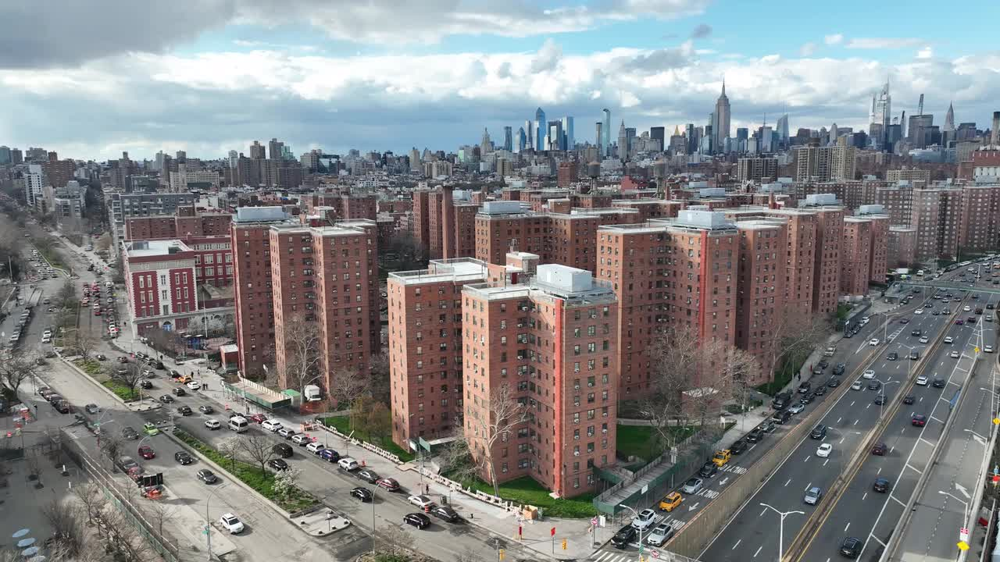

My New York
Growing up in the lower East Side and Living in the Projects shaped what New york means to me.

Growing up in the lower East Side and Living in the Projects shaped what New york means to me.
Small building all over the block not a skyline in sight. Lower east side isnt fancy but its still a sight to behold when you cross the Williamsburg Bridge. The community, the cultures, and the Projects. This is my New York.
When arriving at the lower east side, my eyes landed on the street sign called Essex, a small part in the lower east side that I will be living in for half my life. My eyes landed on a building that held up a massive sign that said “in progress” showing its finished state in a couple years, maybe decades. If the building decides to throw a “tantrum”, the building stands tall without walls covering its interior. My eyes then landed on a market or now an abandoned one Somehow it moved across the street to a more modern building, higher than its previous one. Its history plastered on its sides showing the before and after effects time has accomplished as it ticks away on earth. My walk from Essex to Columbia street didn’t take long as my eyesight was blocked by multiple tall brown buildings called, The Projects. Probably already picturing orange brown brinks, equally small spaced windows, and a weird structured look that is surrounded by duplicates of itself. Well it's true, the appearance of the building is odd compared to modern buildings, time has already taken a toll on them. I have noticed how the project is a family whole, with many of its self copy pasted in every barough you have walked in not in sight cant you miss one odd brown building just standing there like an uninvited guest. Walking in its entrance one’s nose is already filled with hispanic food from all stories, yellow rice con gandules and shrimp, or sopa during mid winter. Maybe hearing Spanish music blasting on one ear while the other listens to some gossip from a group of old ladies sitting by the mailboxes that are always broken. Realistically many wouldn't worry about their mailbox being broken, it is unimportant what someone has stuffed in a small sad metal box. Going up floors the scent of food gets stronger, but it's mixed with asian and black food as well, here and there music will change from reggeton to hip hop later ending at asian apra. Experiencing this moment gives insight on how different the project can be on the inside, hearing stereotypes that surrounding the projects are never true, walking outside of the grounds I watch as my fellow neighbors struggle with sharing out where they live. Especially because people who are fortunate to live outside in modern houses have the comfortability to share out where they live because they know that their homes are better, the dream of new yorkers is to live in an apartment like that one. Many will say The Projects are Ghetto, it's dirty, and poor, “it's not a community you want to surround yourself and your children with.” Those are the voices that are heard outside of the projects, it’s like looking through a window glass, watching them judging by the color of the bricks and the size of a window. There is no escaping the judgment as I watch them walk to their wide gray windows and glass doors, their calm music and unscented food, maybe their homes feel warm and smell like the aftermath of moped lysol floor tiles. From the corner of these brown buildings I watch as the privileged keep an eye every time someone walks out of their unfortunate building, maybe it's just for their safety, or maybe for their pride, who knows. There is some positive and negative energy that surrounds the projects, imagining someone’s perspective from those that live in the project you might think it’s the construction, or the river next to it. Or maybe the affordable rent, crimes, and stigma. All those examples are what affects those that live and grow in the projects, i mean there are so many famous people that have grown up and walked out of the projects as a better person, someone many look up to now. Their words speak about the projects, saying how it's such a negative community and it's not a place many people grow out of except for them, for their hard work. Many teenagers including myself consume these thoughts of never having a chance at becoming like their idols because of their words, them seeing the opposite of their communities and believe these negative comments brought by those outside of these grounds. However, if you were to ask a family waiting for the NYC bus, or a teenager that's walking to school late in the morning at nine, their words will be filled with positive terms. “It’s the Community”, “el apoyo” (the support), “empowering each other to be better”, accessible, inclusive. Walking farther in this community, I start to understand who I will be living with for half of my life, seeing others backgrounds, cultures, and religion. I see what really comes out of the projects, community, that is what surrounds these brown, odd tall buildings that makes it special.
